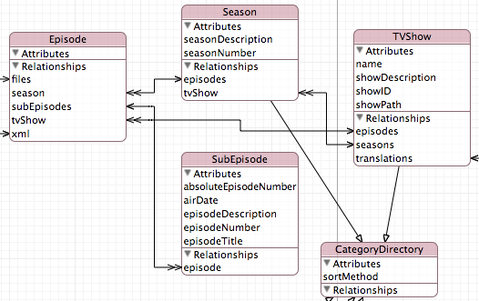
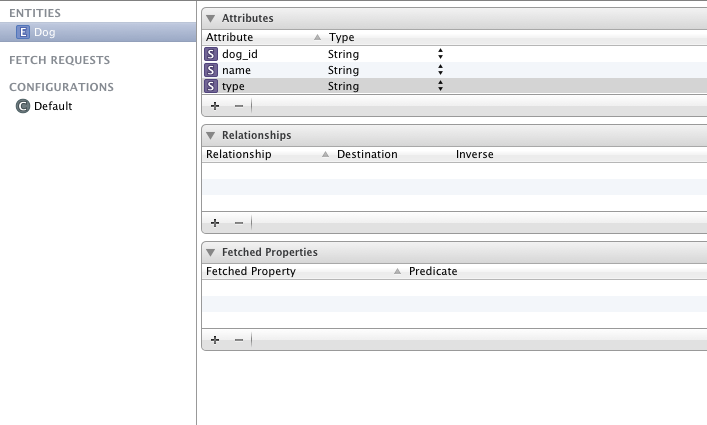
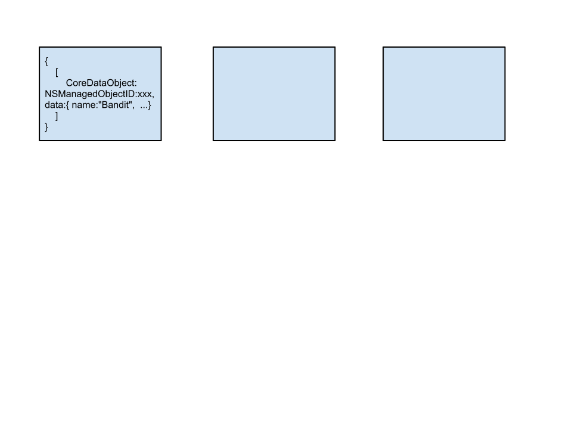

Matt Vaznaian
matt@stackmob.com
@_mattvaz
To introduce you to a powerful class that allows Core Data to talk to a remote service.
To walk you through the implementation of an NSIncrementalStore subclass.
To share the implementation challenges and solutions.
What is ?
Improve the experience of using a mobile development platform.
What existing iOS knowledge can we leverage?
Core Data?

NSIncrementalStore!
“Core Data is an object graph and persistence framework provided by Apple.”
Data Model → NSManagedObjectModel

NSManagedObjectModel &
Persistent Store Type
↓
NSPersistentStoreCoordinator
hasChanges mergePolicy deleteObject: undo: performBlock:
NSManagedObjectContext
insertObject: updatedObjects save: undo: refreshObject:
NSManagedObjectContext
↑ ↓
NSPersistentStoreCoordinator
↑ ↓
Remote Service
NSPredicate
Apple's way to create query parameters.
NSPredicate *predicate = [NSPredicate predicateWithFormat:
@"name = %@", username];
( <, >, !=, ==, like, between, etc... )
“...an abstract superclass defining the API through which Core Data communicates with a store.”
Incremental Store vs. Atomic Store
loadMetadata:
Provide metadata information about the store.
executeRequest:WithContext:error:
Kicks off the execution process.
obtainPermanentIDsForObjects:error:
Creates IDs for newly inserted objects.
newValuesForObjectWithID:withContext:error:
Fills the fault for an object.
newValuesForRelationship:forObjectWithID:
withContext:error:
Fills a fault for an object's relationship.
[NSPersistentStoreCoordinator
registerStoreClass:[SMIncrementalStore class]
forStoreType:SMIncrementalStoreType];
_persistentStoreCoordinator = [[NSPersistentStoreCoordinator alloc]
initWithManagedObjectModel:self.managedObjectModel];
NSError *error;
[_persistentStoreCoordinator
addPersistentStoreWithType:SMIncrementalStoreType
configuration:nil
URL:nil
options:[NSDictionary dictionaryWithObject:self
forKey:SM_DataStoreKey]
error:&error];

Dog *newDog = [NSEntityDescription
insertNewObjectForEntityForName:@"Dog"
inManagedObjectContext:self.managedObjectContext];
[newDog setValue:@"Bandit" forKey:@"name"];
[newDog setValue:@"Border Collie" forKey:@"type"];
// Assign unique ID for remote service if needed
[newDog setValue:[newDog sm_assignObjectId]
forKey:[newDog sm_primaryKeyField]];

NSError *error = nil;
BOOL success = [self.managedObjectContext save:&error];
obtainPermanentIDsForObjects:error:
executeRequest:WithContext:error:
"If the save request contains nil values for the inserted/updated/deleted/locked collections, you should treat it as a request to save the store metadata."
handleSaveRequest:context:error:
For each bucket (inserted/updated/deleted):
For each item in bucket:
Serialize Core Data object to correct form (NSDictionary);
Persist to Remote Database (StackMob);
Report success or error;
end
end
handleFetchRequest:context:error:
Switch ( NSFetchRequestResultType ):
case NSManagedObjectResultType:
Serialize fetchRequest into REST-based query;
Execute query on Database (StackMob);
Deserialize results into instances of NSManagedObjectID;
case NSManagedObjectIDResultType:
Return IDs from results of NSManagedObjectResultType;
case NSDictionaryResultType:
break;
case NSCountResultType:
break;
default:
break;
end
Serializing Fetch Request
newValuesForObjectWithID:withContext:error:
newValuesForRelationship:forObjectWithID:
withContext:error:
The serialization process:
Core Data ↔ StackMob.
Autoreleasing errors so they propagate up.
Designing for a great experience.
Phase 2: Offline Sync
... plus more Core Data feature support!
matt@stackmob.com | @_mattvaz
Download the SDK today @
https://www.stackmob.com/platform/start
Github: /stackmob/stackmob-ios-sdk